kaggle Pandas
Creating, Reading and Writing
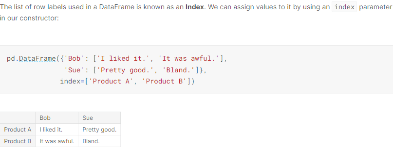
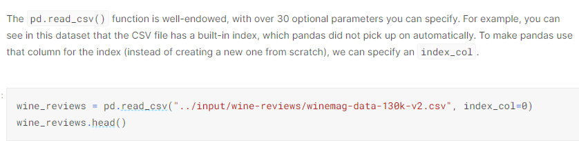
Indexing, Selecting & Assigning
Indexing in pandas
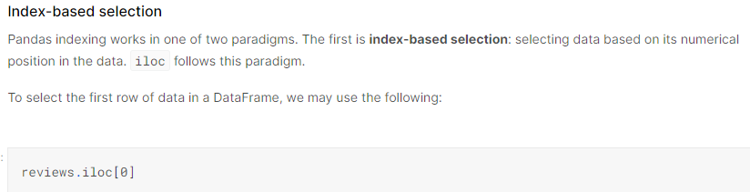
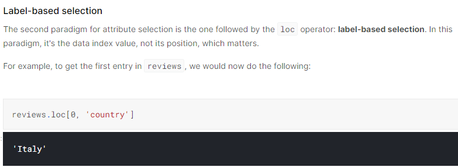
Summary Functions and Maps
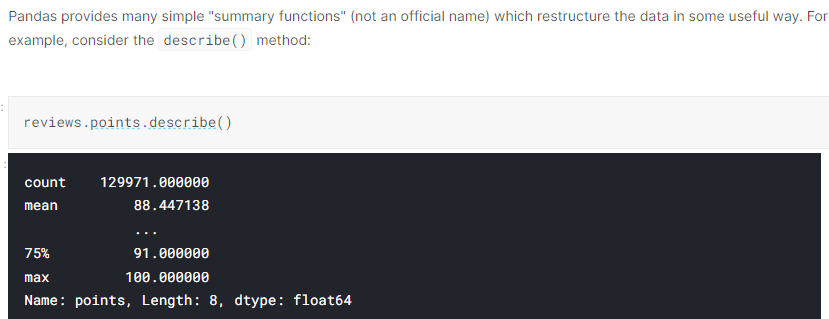
Maps
A map is a term, borrowed from mathematics, for a function that takes one set of values and “maps” them to another set of values.
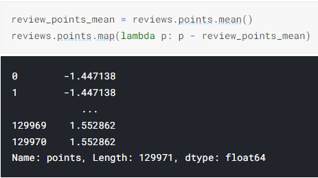
The function you pass to map() should expect a single value from the Series (a point value, in the above example), and return a transformed version of that value. map() returns a new Series where all the values have been transformed by your function.
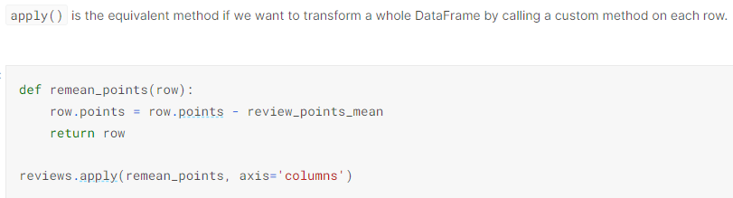
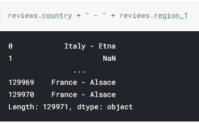
Exercise
descriptor_counts = pd.Series([reviews['description'].map(lambda x: 'tropical' in x).sum(), reviews['description'].map(lambda x: 'fruity' in x).sum()], index=['tropical', 'fruity'])
# descriptor_counts
# Check your answer
q6.check()Grouping and Sorting
Groupwise analysis
groupby() created a group of reviews which allotted the same point values to the given wines. Then, for each of these groups, we grabbed the points() column and counted how many times it appeared. value_counts() is just a shortcut to this groupby() operation.
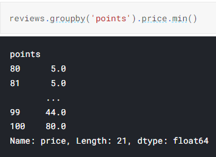
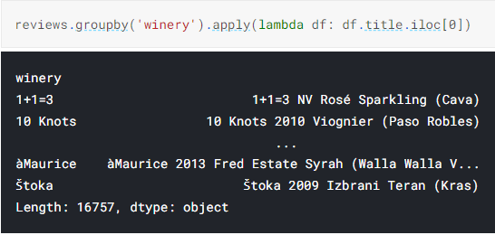
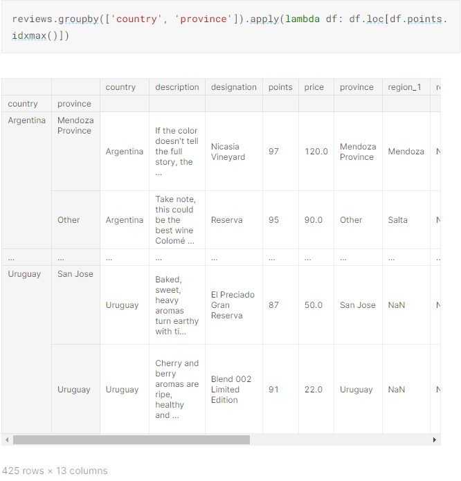
Another groupby() method worth mentioning is agg(), which lets you run a bunch of different functions on your DataFrame simultaneously. For example, we can generate a simple statistical summary of the dataset as follows:
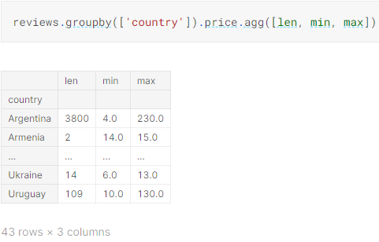
Multi-indexes
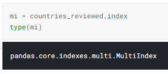
Multi-indices have several methods for dealing with their tiered structure which are absent for single-level indices. They also require two levels of labels to retrieve a value.
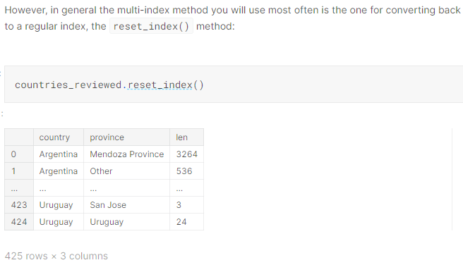
Sorting
sort_values() defaults to an ascending sort, where the lowest values go first. However, most of the time we want a descending sort, where the higher numbers go first.
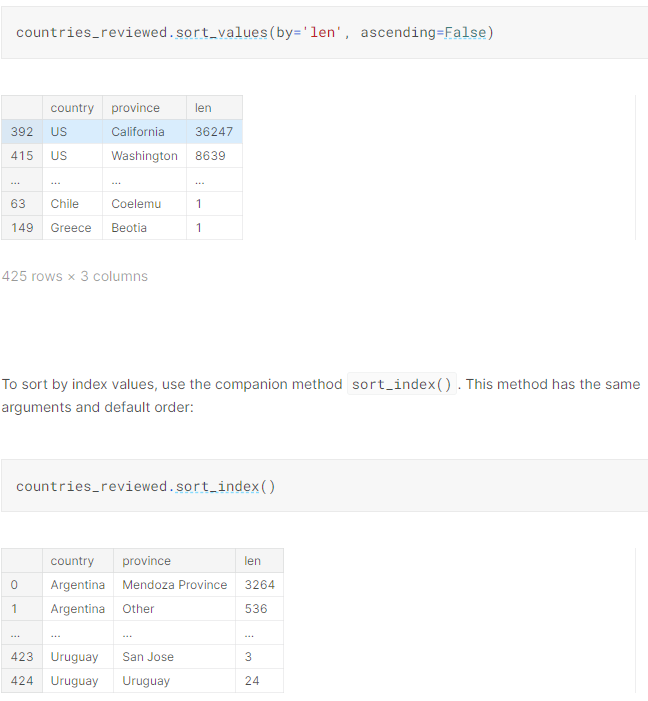
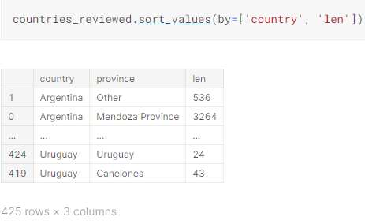
Data Types and Missing Values
Dtypes
The data type for a column in a DataFrame or a Series is known as the dtype.
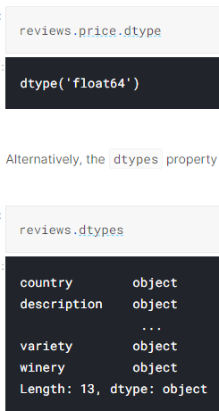
float64 means that it’s using a 64-bit floating point number; int64 means a similarly sized integer instead, and so on.
One peculiarity to keep in mind (and on display very clearly here) is that columns consisting entirely of strings do not get their own type; they are instead given the object type.
It’s possible to convert a column of one type into another wherever such a conversion makes sense by using the astype() function.
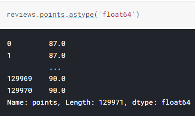
Missing data
Entries missing values are given the value NaN, short for “Not a Number”. For technical reasons these NaN values are always of the float64 dtype.
Pandas provides some methods specific to missing data. To select NaN entries you can use pd.isnull() (or its companion pd.notnull()). This is meant to be used thusly:
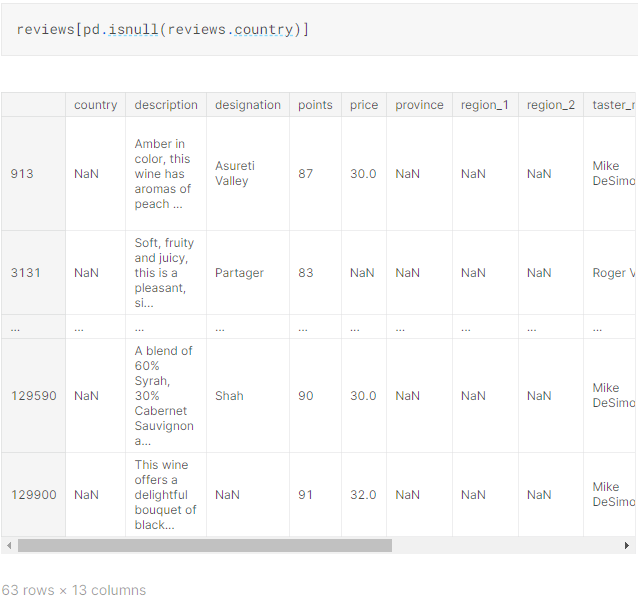
Replacing missing values is a common operation. Pandas provides a really handy method for this problem: fillna(). fillna() provides a few different strategies for mitigating such data.
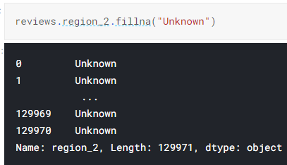
Or we could fill each missing value with the first non-null value that appears sometime after the given record in the database. This is known as the backfill strategy.
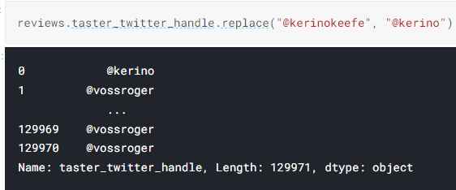
Renaming and Combining
Renaming
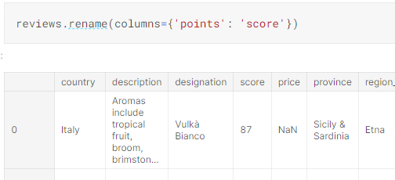
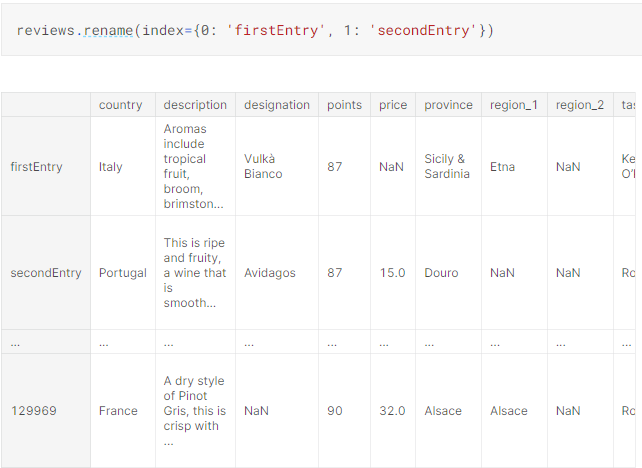
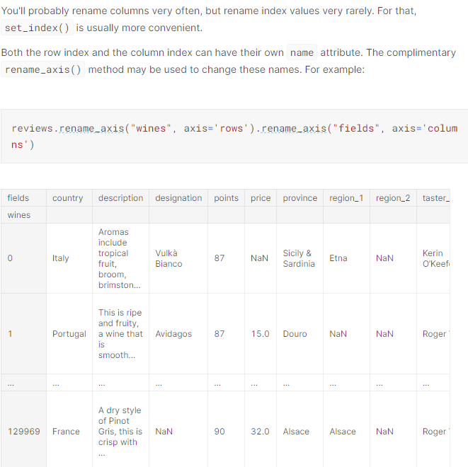
Combining
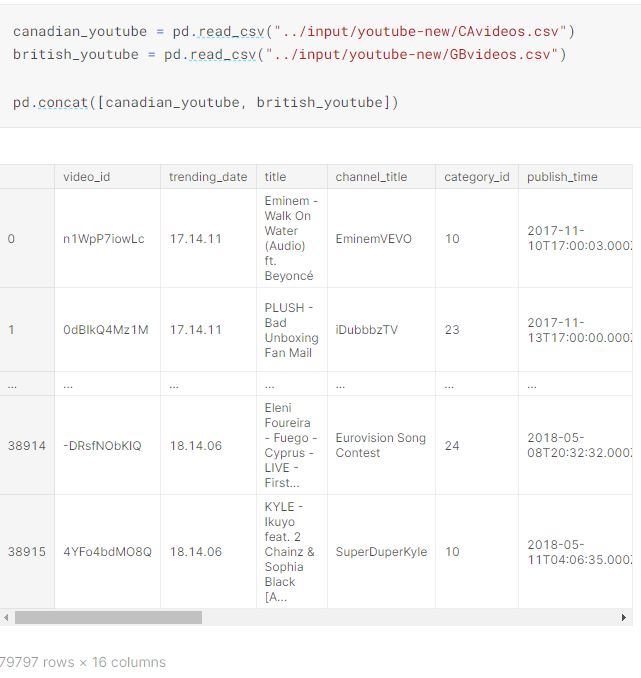
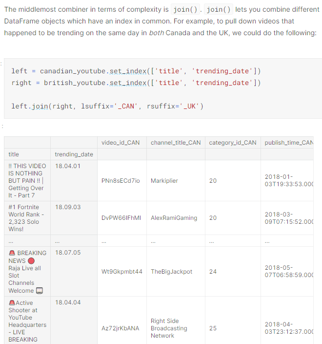